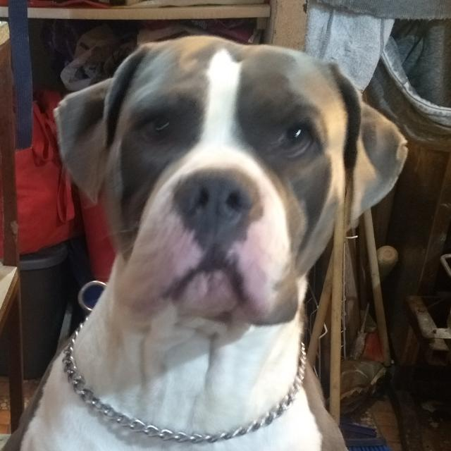

Presentación Bootcamp
Nombre: Luis Manuel Guere Pérez
33 Años Ciudad de México
Estudié Ingeniería en Sistemas Computacionales en la Universidad Tecnológica Latinoamiericana en Línea (UTEL).
Soy freelancer dedicado a la consultoría IT en general.
Actualmente uno de mis servicios principales son la administración de camapañas de Google Ads junto con la optimización de landing pages y sitios webs para el correcto funcionamiento de la herramienta, además de la edición de contenido digital para plataforma de aprendizaje especializado del ámbito legal en las plataformas de Youtube y Wordpress.
Áreas de interés:
- Bases de Datos.
- Hacking.
- Facilities.
- Licenciamiento.
- Soporte
- Redes.
- Servidores
- Desarrollo web.
- Desarrollo de Vídeojuegos
- Inteligencia Artificial
Otros Proyectos
Tengo un pequeño negocio de venta de artículos personalizados mediante técnicas de sublimación y vinil textil, también ayudo a mis padres en sus pedidos de comida.
Sublimación
La sublimación es la técnica por la cual un objeto en estado solido pasa a estado gaseoso sin pasar por el liquido mediante la aplicación de calor, en esta caso es tinta que pasa del papel al objeto que se está personalizando, simpre y cuando éste se encuentre recubierto por uan capa de polímero o sea una tela con un porcentaje de poliester mayor al 90%, para su correcto efecto la superficie debe de ser de preferencia blanca o colores muy claros para que se peuda apreciar correctamente la imágen.


Algunos de los productos ublimables son los siguientes:
- Tazas.
- Mousepads
- Playeras
- Sedaderas
- Plumas
- Tarros
- Termos
- Dog tags
- portavasos
- Mandiles
Vinil Textil
El vinil textil es un polímero en el cual se trazan diseños generalmente en siluetas y se transfieren mediante calor al objeto que se desea personalizar, a diferencia d ela sublimación se usan capas de vinil si se necesita agregar mas de 1 color.

Como lo dice el nombre se puede utilizar en todo articulo de tela, pero incluso puede utilizarse en otro tipos de aplicaciones como en tazas, tarros, porta vasos, entre otros aarticulos que se presten para ello, para esta ténica no importa el color del objeto.
Pasatiempos
Suelo jugar una amplia variedad de videojuegos principalmente RPG, aunque ultimamente por la carga de trabajo solo juego Apex legends y Genshin Impact.
Dejando de lado lo anterior paso gran parte de mi tiempo leyendo temas de política, avances tecnológicos en general y suelo cocinar diversos alimento, principalmente alimentos que tengan que ver con fermentación, comida oriental, tiempos de cocción amplios, algunos postres, sobre todo lo que tenga que ver con horneado.